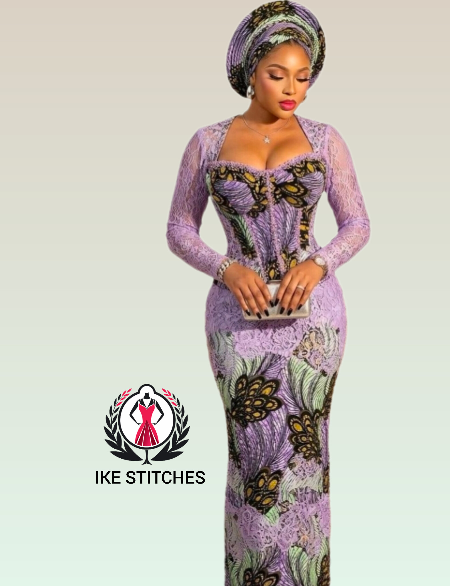
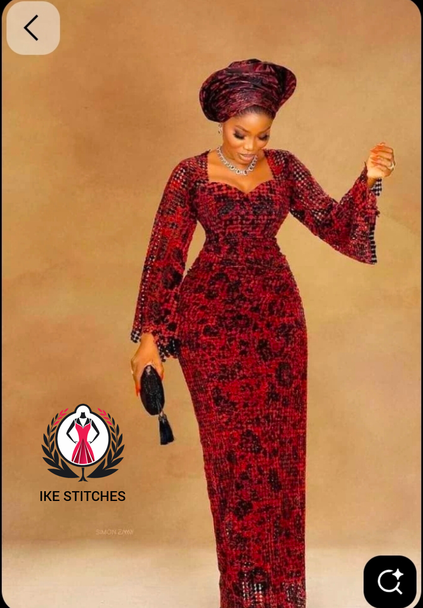

IKE-STITCHES
Featured Fashion Article
Featured Fashion Article
Explore the latest bridal elegance, luxury corset gowns, premium lace combinations and celebrity-inspired wedding fashion trends dominating African fashion in 2026.

Wedding fashion in 2026 is becoming more luxurious, more expressive and more elegant than ever before. Modern brides are no longer settling for simple traditional styles alone. Instead, they now combine classic elegance with modern fashion trends to create unique bridal looks that stand out beautifully.
Across Nigeria and other African countries, fashion designers are introducing stunning bridal pieces featuring premium lace fabrics, corset shaping, hand-stone embellishments and dramatic sleeves. These styles create a powerful combination of elegance, confidence and luxury.
Many brides are also choosing multiple outfit changes for their wedding ceremonies. A bride may wear a traditional lace outfit for the engagement, a luxury white gown for the church ceremony and a glamorous reception dress for the party. This trend has greatly influenced bridal tailoring and luxury fashion businesses.

Structured corset gowns are becoming one of the biggest bridal trends because they create elegant body shaping while maintaining sophistication and comfort.

Luxury lace fabrics with detailed embroidery, stones and sequins are widely used for bridal and reception outfits in modern weddings.

Brides now combine modern Ankara styles with luxury tailoring for stylish reception entrances and after-party celebrations.
Choosing the right bridal outfit depends on several important factors including body shape, wedding theme, venue decoration, comfort and personal style preference. A well-designed outfit should not only look beautiful but should also make the bride feel confident and comfortable.
Tall brides often look elegant in long fitted gowns with dramatic sleeves or layered designs, while shorter brides may prefer slimmer silhouettes that create a taller appearance.
Fabric selection is also extremely important. Luxury lace, satin, tulle and organza fabrics can completely transform the final appearance of a bridal outfit when properly combined.
Professional tailoring also plays a major role. Even expensive fabrics can lose their beauty if the finishing is poor. This is why custom measurement and proper fitting remain essential for luxury bridal fashion.


Luxury wedding fashion in 2026 continues to evolve with more creativity, elegance and cultural influence. From premium lace combinations to modern corset gowns, today's bridal styles are designed to celebrate beauty, confidence and individuality.
At IKE-STITCHES, we believe every bride deserves a timeless outfit carefully crafted with precision, luxury finishing and attention to detail. Whether you prefer modern bridal glamour, traditional elegance or contemporary African fashion, the perfect style can always be created for your special day.
Book A Bridal OutfitExplore the newest corset styles transforming African luxury fashion and bridal elegance.
Read MoreLearn how to identify quality lace materials for weddings, parties and luxury outfits.
Read More
Modern two-piece outfits redefining casual and luxury fashion styling for women.
Read More